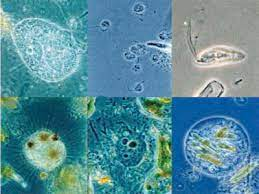

Reinos
Concepto
En la biología, y especialmente la taxonomía, se denomina Reino a cada uno de los grandes grupos en que se clasifican las especies de seres vivos conocidas, atendiendo a su parentesco evolutivo. Es el segundo nivel de clasificación de los seres vivos, por debajo de los dominios y por encima de los filos (o phylum).
A lo largo de la historia de la ciencia, el ser humano ha hecho esfuerzos por comprender las dinámicas de origen y de cambio propias de la vida, y para ello ha desarrollado estos sistemas de clasificación, que a su vez han variado mucho con el paso del tiempo.

Si el concepto no te quedó claro como el hombre de arriba, no te preocupes, el tema es sencillo de comprender. Por eso hemos preparado subtemas para que se organize bien el cerebro (Paso a paso)
Índice
Los primeros sistemas de clasificación de la vida datan de tiempos remotos, cuando los filósofos de la antigüedad propusieron aproximaciones a la vida distinguiendo entre sus propiedades básicas observables. Así, tenemos:
- Sistema de dos reinos: Atribuido al filósofo griego Aristóteles (IV a. C.), dividía los seres vivos en dos grandes categorías, basándose en lo que el teórico denominó “alma vegetativa” y “alma sensitiva”. En el primer caso, se traducía en capacidad para crecer nutrirse y reproducirse, mientras que en el segundo esto incluía además el deseo, el movimiento y la percepción. Este sistema fue heredado mucho tiempo después por el famoso científico y naturalista sueco Carlos Linneo, quien propuso en 1735 un sistema de clasificación de dos reinos propiamente dichos: Vegetabilia y Animalia.


- Sistema de tres reinos: Un tercer reino surgiría por primera vez en 1858, cuando el biólogo inglés Richard Owen se diera cuenta de la dificultad de clasificar ciertos microorganismos en base a los dos reinos de Linneo, y propuso un tercero: Protozoa, compuesto por seres microscópicos formados por células nucleadas. Este nuevo reino fue rebautizado como Proctista en 1860 por el también inglés John Hogg, aunque en sus consideraciones proponía también la existencia de un “reino mineral”, que fue luego descartado por Ernst Haeckel, padre de la protistología, quien en 1865 bautizó al tercer reino como Protista e incluyó en él a todas las formas de vida microscópica con caracteres animales, vegetales y mixtos, pero distinguiendo por primera vez entre organismos unicelulares y pluricelulares.

- Sistema de cuatro reinos: A medida que la microbiología avanzaba, el sistema de tres reinos exigió replantearse, ya que la distinción entre organismos procariotas (sin núcleo celular) y eucariotas (con núcleo celular) se hacía más evidente e importante. Y para distinguir entre microorganismos nucleados y no nucleados, Herbert Copeland en 1938 propone un sistema de cuatro reinos: Animalia, Plantae, Protoctista y un nuevo grupo para las bacterias anucleadas: Monera.
- Sistema de cinco reinos: El quinto reino surgió en 1959 cuando Robert Whittaker comprobó que los hongos constituían un grupo totalmente distinto del vegetal, y en 1969 propuso un sistema de cinco reinos que incluía el Fungi (hongos), y conservaba los cuatro de Copeland. Este fue uno de los sistemas más populares de la historia.

A simple vista esos, sin embargo, hay otros dos más, los cuales han surgido en tiempos recientes gracias a los avances tecnológicos e investigaciones acerca de la estructura de los seres vivos:
- Sistema de seis reinos: El adelanto de las técnicas de estudio y exploración del ADN y ARN en la segunda mitad del siglo XX revolucionó muchos de los supuestos de la biología, y permitió a Carl Woese y G. Fox reinventar el sistema y proponer seis reinos distintos: Bacteria, Archaea, Protista, Plantae, Animalia y Fungi. Estos seis reinos se dividen, a su vez, en dos dominios: Prokaryota (Bacteria y Arquea) y Eukaryota (el resto). En muchos lugares este es el sistema aceptado.

- Sistema de siete reinos: Obra del canadiense Cavalier-Smith y desarrolladores posteriores, propuso la creación del reino Chromista para distinguir a las algas diatomeas, oomicetos y similares, y recuperando el nombre Protozoa para el resto de los microrganismos eucariotas. Así, los siete reinos serían los dos de procariotas: Archaea y Bacteria, y cinco de eucariotas: Protozoa, Chromista, Plantae, Fungi, Animalia.

Debido a que el sistema de 5 reinos es el más popular, vamos a revisarlo:
- Reino Monera
- El término monera proviene del gr. moneres que significa simple; los organismos que forman este reino son las bacterias y las cianobacterias, consideradas como el grupo más antiguo y numeroso que ha existido en la Tierra. Se calcula que surgieron hace aproximadamente 3,800 Ma (millones de años), y que existen entre 7,000 a 10,000 especies, las cuales pueden ser muy diferentes en su morfología y hábitos de vida, pero presentan algunas características generales que permiten agruparlas en este reino, por ejemplo:
- Son unicelulares
- De tamaño muy pequeño, miden entre 1 y 10 µm (micras)
- Son procariotas (carecen de organelos internos rodeados por membrana)
- Pueden alimentarse de forma autótrofa o heterótrofa
- Se reproducen asexualmente por fisión binaria
- Su respiración puede ser aerobia o anaerobia.
- Las células que forman a estos organismos están rodeadas por una membrana plasmática que contiene al citoplasma en el que se encuentran los ribosomas que son estructuras formadas por ARNr y proteínas; también tienen un cromosoma circular formado por una cadena de ADN desnudo (sin proteínas). En la parte de afuera, envolviendo a la membrana está la pared celular de consistencia rígida y formada por peptidoglicanos (cadena lineal de polisacáridos unida a cuatro aminoácidos) que le da forma y protección. Algunas bacterias presentan una cápsula que le proporciona protección adicional y que les permite pegarse a los tejidos del cuerpo y evadir su detección; también pueden tener unas estructuras llamadas pilli o pelos con los que se adhieren a las células que van a infectar y finalmente los flagelos que les proporcionan movilidad.

- Reino Protista
- Este reino está formado por organismos que presentan características que no les permiten clasificarse en los otros cuatro grupos (bacterias, hongos, vegetales y animales), debido a que sus miembros tienen una gran diversidad de formas, tamaños, alimentación, hábitos, etc., por lo que es muy difícil especificar las propiedades que los definen. A continuación, se mencionan algunas generalidades de estas:
- Presentan células eucariotas.
- Pueden ser unicelulares, coloniales o pluricelulares (simples sin tejidos especializados)
- Nutrición autótrofa o heterótrofa
- Reproducción asexual y sexual
- Viven en medios acuáticos y terrestres
- Son microscópicos y macroscópicos
- Con respiración aerobia y anaerobia
- Los miembros de este reino tienen una gran diversidad debido a su origen polifilético, que significa que no tienen un ancestro común único. En este grupo se pueden encontrar protozoarios, algas, hongos deslizantes, etc. y su tamaño varía de 1 µm en algunas algas verdes hasta 100 m de largo en las algas pardas.

- Reino Fungi
- El término fungi deriva del latín fungus que significa hongos. A los miembros de este reino se les conoce como mohos, levaduras, setas, hongos, royas, etc. Presentan características particulares que los diferencian de los vegetales con los que durante mucho tiempo estuvieron clasificados, hasta que en 1968 se les crea su propio reino. Los organismos que forman este grupo tienen:
- Células eucariotas
- Son heterótrofos
- Se reproducen por esporas producidas en forma asexual o sexual
- Tienen pared celular formada por quitina
- La mayoría presentan respiración aerobia a excepción de las levaduras
- Son principalmente terrestres en lugares húmedos y unos cuantos acuáticos
- Son pluricelulares, con excepción de las levaduras que son unicelulares
- Los hongos pueden tener forma filamentosa o levaduriforme, los primeros son pluricelulares que están formados por unas estructuras filamentosas, largas y ramificadas constituidas por células llamadas hifas y el conjunto de estas forman el micelio que constituye el cuerpo del hongo; las hifas pueden estar divididas por unos tabiques transversales llamados septos, o verse como una sola célula alargada con numerosos núcleos que recibe el nombre de hifa cenocítica; los segundos son organismos unicelulares de forma globular.

- Reino Plantae
- Las plantas descienden de las algas verdes, que colonizaron la Tierra y dieron origen a dos grupos: las Bryophytas (gr. bryon-musgo y phyton-planta), y las Tracheophytas (lat. trachia-conducto y phytonyton-planta). Las primeras en aparecer fueron las briofitas (aproximadamente hace 472 Ma), también conocidas como plantas no vasculares por carecer de vasos conductores, son de tamaño pequeño (unos cuantos centímetros de altura), la mayoría viven cerca del agua o en lugares húmedos, no tienen raíces, tallos ni hojas verdaderas; presentan unas estructuras llamadas rizoides que les permiten fijarse al suelo y absorber agua y algunos nutrientes. Dentro de este grupo se encuentran los musgos, las hepáticas y los antoceros
- El segundo grupo es el de las traqueofitas, también conocidas como plantas vasculares por la presencia de vasos conductores xilema y floema; el primero transporta el agua y los minerales desde las raíces hacia arriba y el segundo distribuye los alimentos por toda la planta; su tamaño varía desde unos milímetros hasta algunas decenas de metros de altura; presentan estructuras especializadas que les han permitido adaptarse a la vida en la tierra (raíces, tallos y hojas verdaderas); las raíces le sirven para anclarse al suelo y absorber agua y minerales; los tallos dan soporte y estructura a la planta y llevan a las hojas y a las estructuras reproductoras; las hojas son los órganos fotosintéticos de la planta ya que en ellas se encuentra la mayor cantidad de cloroplastos, también realizan el intercambio gaseoso a través de unas estructuras llamadas estomas.
- Sus características son:
- Presentan células eucariotas
- Son pluricelulares
- Se adaptaron a vivir en tierra firme
- Su nutrición es autótrofa por fotosíntesis
- Tienen una pared celular formada principalmente por celulosa
- Poseen tejidos y órganos diferenciados y una cutícula resistente a la desecación.
- La mayoría son de vida terrestre, con algunas excepciones que viven flotando en el agua
- Tienen una pared celular formada principalmente por celulosa
- Las plantas representan para los ecosistemas y el hombre su principal baluarte, ya que sin ellas no sería posible la vida. Dentro de las funciones que realizan están la producción de alimentos para diversos organismos y el hombre, la liberación de oxígeno a la atmósfera, sirven de refugio y protección a otras especies, participan en el reciclaje de los elementos químicos en la naturaleza, en la renovación de los suelos, regulan el clima; además, de ellas se obtienen productos como: madera, papel, telas y sustancias que se utilizan en la farmacología, entre otras.

- Reino Animalia
- En este reino se encuentra un porcentaje importante de las especies descubiertas hasta ahora, es un grupo muy diverso de organismos que comparten las características siguientes:
Todos tienen células eucariotas
- Son pluricelulares
- Su alimentación es heterótrofa por ingestión de alimentos
- Presentan tejidos especializados
- Respiración aerobia
- Reproducción sexual y asexual
- Tienen movilidad
- No poseen pared celular
- Este grupo presenta la mayor complejidad evolutiva ya que sus células han desarrollado la capacidad de realizar funciones específicas que se manifiestan en el aumento de la organización celular, formando tejidos y éstos a su vez órganos, que en ciertos animales se organizan en aparatos y sistemas. Generalmente presentan un aparato digestivo, así mismo la mayoría tienen un sistema nervioso y muscular bien desarrollado, lo que les permite responder a los estímulos del medio ambiente. La mayoría de los animales tienen la capacidad de moverse (locomoción), aunque sea en alguna etapa de su vida, como es el caso de las esponjas que son sésiles en la fase adulta, pero móviles en la etapa larvaria.
- El reino animalia se puede dividir en dos grandes grupos:
- Los vertebrados que son organismos que tienen un esqueleto interno articulado con columna vertebral formada por hueso o cartílago y aquí se encuentran cinco clases: peces, anfibios, reptiles, aves y mamíferos.
- Los invertebrados son animales que no tienen esqueleto interno articulado debido a que carecen de columna vertebral, en este grupo se encuentra el 95% de las especies conocidas de este reino, como ejemplos de invertebrados tenemos a los artrópodos (insectos, arañas y crustáceos), moluscos (caracoles, calamares y pulpos), equinodermos (erizos y estrellas de mar) y anélidos (lombriz de tierra).
- Este reino tiene desde el punto de vista ecológico una gran importancia para la preservación del medio ambiente ya sea como controladores de insectos, en la polinización de las plantas, como dispersores de semillas, productores de guano (fertilizante), etc. La biodiversidad contribuye a la sostenibilidad del planeta por lo que cada organismo desempeña un papel importante para mantener el equilibrio ecológico.

 Si llegaste aquí, felicidades, ya puedes presumir que sabes sobre los reinos biológicos... Y que no te vean la cara
Si llegaste aquí, felicidades, ya puedes presumir que sabes sobre los reinos biológicos... Y que no te vean la cara